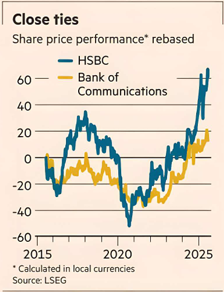

HSBC has long argued that its shareholding in China’s Bank of Communications is critical to its strategy and symbolic of its strong ties to the country. Perhaps, though, those ties aren’t as strong as it thought.
The Chinese government recently elbowed HSBC aside in a $17bn capital raise. Awkward as that looks for the Hong Kong lender, Beijing might have actually done HSBC a favour. HSBC’s BoCom holding is down from 19 per cent to 16 per cent, it confirmed yesterday, as it reported a $2.1bn charge from writing down the value of its stake. China’s move was part of a broader injection of some $70bn across four of the country’s bigger banks to boost their lending ability.
HSBC does not appear to have been asked to follow the money. Should it have been, BoCom’s second-largest backer would most likely have balked — or its own investors would have — but it’s hard to avoid the sense of a slight when the result is the biggest change in HSBC’s holding since it first took a stake in 2004.
There are aeons of China banking history between now and then, when the country’s thinly capitalised banks were eager for westerners’ cash and their knowhow. HSBC’s $1.75bn agreement to buy 19.9 per cent of BoCom was signed in the Great Hall of the People in Beijing’s Tiananmen Square, no less, and included promises to send executives. It spurred a rush of similar deals, often for bigger amounts though smaller stakes, by competitors. Since then, HSBC’s rivals have mostly exited their holdings following the 2008 financial crisis, either to replenish capital or to avoid having to stump up more as a result of the regulatory changes that followed. That HSBC has clung on to its BoCom stake despite its cost speaks volumes about the bank’s view of its importance.
BoCom is, though, something of an orphaned holding. HSBC can’t expand it, and actively selling it would bring the real risk of upsetting Beijing. Yesterday, the lender was at pains to shrug off the enforced shrinking and point out that the resulting earnings adjustments will be small.
All true, but Beijing’s loosening of HSBC’s BoCom ties might be an elegant way for the bank diplomatically to start stepping back from an investment whose real strategic value no longer looks so compelling.